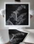
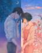

Name: Trish Ann Payumo
These are three artisits who inspire me:
Kerby Rosanes

I have been following this artist since I was in elementary school when I started doodling.
I have seen how their art progressed through the years, inspiring me to do the same.
Most of my art or things I make are typically monochrome because of this.
Zipcy

I have been following this artist since I was in high school.
I love their art and see how they portray love and express it in such a beautiful manner.
I do not draw people, but this inspires me to start even simple sketches because I want to portray the same sentiments.
mocha@新刊委託中
I have been following this artist recently, and I am a huge sucker for sceneries.
I love aesthetic backgrounds and this person inspires me to start digital art.